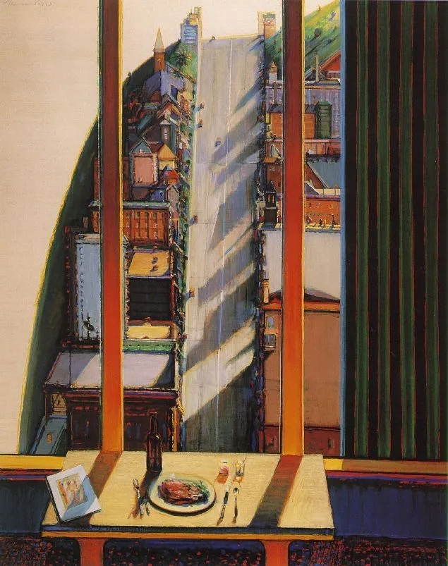

My Dearest Lady:

序 - August 2nd, 2020 by SAL
今天的武汉，燥热，明亮。你短暂的离去让我在过去几天内被烧的通红的理智，有了深呼吸与冷静的机会。我需要好好想一想故事的脉络，想一想我们的吻究竟是从何时开始生根，想一想我的“instinct”来源于一种什么样的情感。我要好好想一想你。
让我从东湖的夜想起。
你知道的，有些话会被羞涩挡在舌尖后面，会被不明朗的天空模糊了音节，会在坠入温柔乡之前的那个岔路踩下急刹、转弯离去；你知道的，每当这时，某个无趣的故事、某些耷拉着脑袋的词汇却成了替代品，传入你的或我的耳中。那些话，那些藏在一声声晚安后的话，那些掺了糖却又红了脸的话，需要一个契机、一把钥匙——我在你的掌心找到了这把钥匙。说实话，现在想来，当时的我好似被操控了般，先是突然想摸栈桥的天花板，于是把手机交给你拿着……当我拿回手机的那一瞬间，一种不知名的力量迫使我伸出另一只手——它在今夜只有一个目的：那就是测量你掌心的温度。那一瞬间，你说你心跳加速了，而我，直到几秒之后才回到我自己。直到那时，我才意识到，这大半年来陪伴我日日夜夜的，那个有着诗一般的名字的秋，那个可爱的你，从此变成了我的秋，我的你。
Memory falls to the soul like dew to the pasture.
是一场雪让我记住了你。我告诉过你，我对“来路不明”的好友很抵触。当时你加我，我给我室友也说了，他们基本都不看好。然而那场雪，那个午后，那个因雪而激动，因激动而可爱的你，让我有些放下了戒心（我给你讲过那天的故事，那天我手机没电了，在教学楼待着没有回去，下午一出教学楼，竟然已是漫天白絮。我说过，我以前是个迷信的人，可能我现在依旧是。也许，在爱情面前，我永远迷信）。我已经不记得当时的心理状态了，我只记得，我们越来越聊得来，直到我决定转移至网易云——那是私密的地方，是不同于QQ的一个诗化的地方。然后是推歌，然后是一次又一次的惊喜：灵魂竟是如此吻合。法语、《movie（my silly silly man…）》、《gravity》……我相信你记得比我更清楚，你有一颗独属于女人的敏感的心。那时，你已经在我的list上了，我有种想“扩写”故事的冲动（啊啊啊说直白点就是想往恋爱方向引的冲动），但这种冲动还很微弱，毕竟当时，你的形象还很缥缈。
啊，插播一句，跨年的那天晚上，我答应你要在跨年的那一瞬间找你，把新年的第一秒送给你，然而当时光谷步行街实在是人太多了，没信号了……
然后，你知道的，之后的事情让我伤了心，甚至觉得自己很“倒霉”。我真的不想奢求什么，只想要个陪伴、要个灵魂肉体都能与我契合的人，至于所谓的风花雪月、感天动地的情节，我压根不再感兴趣——那些只是过眼云烟、海市蜃楼，而陪伴才是根基。说“不奢求”好像是放低了标准、很容易满足，但其实那样一个能契合的人，是多么难以遇到啊？而正因为如此，一旦遇到了却又失去，是多么遗憾？大学时我并不是没有主动出击寻找，也不是没有人来寻找我，但这么些个“她”、“她”、“她”，无非是衬托了你，你，你的uniqueness，以及how compatible we are。你越是独特，你走后在我的生活里留下的空洞就越大。当时你确实伤了我的心，触碰了我的“原则”，我的干脆想必你也有印象。但是我舍不得删掉你，舍不得、舍不得。
In my barren land you are the final rose.
后面的故事，就与疫情有关了。迅速增长的数字逐渐让人忘记了那是一条条人命，而随着疫情而来的恐慌、禁闭、家庭矛盾、无聊让我失去了对某些事情的坚持。我想，生命已经足够脆弱而短暂了，如果再加上各种“原则”，那将是多么无趣？如果一切过程都要按照约定好的步骤、时间来走，那这不是形式主义又是什么呢？如果我想牵你手的时候却想，“啊不行，我们见面的时间太短了，这样不好，这样不好”，然后便放弃了牵手，那岂不是自作自受吗？People change. 疫情期间，我时不时……去翻你的歌单，有时候我在里面找到了我的痕迹，但不敢确信那是巧合还是……还是你也在翻我的。那是怎样的一种心理状态？仿佛在小巷与你擦肩而过，却又回头看你是否也在回头看我。仿佛为了回应我（们？）的等待、试探，上帝（如果有的话），送来了你可爱又成熟的妹妹。她的“多管闲事”成了“牵线搭桥”，她说你早就和之前的他断了联系，而我呢，我知道如果彼时再不找回你，那便是犯罪，对未来的我进行犯罪。
Enchanté!
我们的故事线终于又合并了。在我手机的备忘录上，有这样一条：“合建歌单。云散步（4月17日凌晨1 :20）”。那是灵感在午夜时找到了我，而我除了听命于它，还有什么能做的呢？爱情，靠例外、特殊和超脱而生存。爱情，是由一个又一个仪式像砖头那样搭建而成。拥抱、亲吻、歌、晚安，节日的礼物，既是欲望也是仪式。可以说，当我建立歌单的那一刻，必然就决定了我会和你一起听歌，必然决定了地铁二号线里会有两个紧靠着互相取暖的灵魂，必然决定了我想亲吻那个唱着歌的你。一切的一切，当它们发生时都显得格外突然，甚至是仿佛心血来潮一般，但事实上，一切的一切都有其自身的逻辑——爱的逻辑。科恩说：并不是我去寻找，而是love seizes me. 大半年来，我们都如同盲人一样瞎碰，然而最伟大的诗人都是盲人，最饱满的色彩是黑色。哦……我都不知道我在写些什么，也许类似诗的语言应当放在诗集的那个文档里面去写，而在这里，应当写下我想对你说的最贴近大地的话语。
“我的夜晚是对你的狂想。”
你知道我多爱你的那句“晚上的时间都属于你”吗？有多少个夜晚，我在那滔滔不绝地给你讲天马行空的东西？既有光学，又有俄国历史，甚至还有存在主义。而你总是陪伴着我，哪怕已转钟，哪怕那些复杂的人名、地名像精灵一样朝你的耳朵吹进困倦。我天性里就是一个喇叭，时而喃喃诗句，时而如同上了瘾的演讲者一样宣讲某国的历史。我想说的话一旦被长久地闷在心里，必然会腐烂。然而我有你。你，你，你。你总是我的第一个听众，我很难不联想到那些伟大的人们——马尔克斯，托尔斯泰——他们与他们第一个听众的故事。
“多得是，你不知道的事。”
写的越多，便越发觉得你的好。在找到你掌心的钥匙之前，似乎总有堵墙阻挡着我，不允许我去思考那些与情感有关的问题，也不允许我说出动情的话（emm..情话）。这似乎是一种自我保护机制，在没有获得百分之百的确信之前，我不敢、不敢、不敢交出我自己。我知道，一旦陷入了爱中，我便被剥夺了一切武装。我只有确信了你是我需要的，确信了你将是我的，之后，我才能毫无顾忌地凝视着你。你知道的，对视、拥抱、亲吻的背后，是许多沉甸甸的东西。我不再仅仅把你和落日混为一谈了——我开始把我和你混为一谈。我和你：意味着我们不再是过去各自故事的倾听者，意味着我们已是未来共同故事的书写者。我和你。
我们彼此相触。用什么？用翅膀。
我们的灵魂纠缠，十指相扣，翅膀相触。接下来的问题，就是如何像两人三足运动那样，有默契地“行走”。我不愿给出那些带有“永远”的承诺，那些祈求万岁的人都活不过半百，而那些将自己沉浸于路边的小猫、黄昏的晚霞的人，才是超脱于时间之外，并因此统治了时间的人。我只能说，只愿说，“我昨天对你好，我今天对你好，我明天对你好。”我相信你的眼睛是雪亮的，你的心是敏感的。我相信你。
也许这封信到这就该结束了。下午就能见到可爱的你，然后再争论一下到底是你吃掉我，还是我吃掉你？你身上还有一些东西需要习惯我，而我也还需要习惯你。你的眼睛，你的鼻子，你的唇，你的气味……我的你。
Sal
2020.8.2
我希望你用滚烫的吻狠狠地惩罚我的名
直至信纸着了火、你的双眼着了魔
直至你笃信“我深爱这个名字的主人
而他所爱的也只有我一人。”

C’est le moment le plus froid de la journée : il y a déjà dix heures que la nuit est tombée et il y a encore quatre heures que le soleil se lèvera. Doucement, tout est suspendu…par la force la plus puissante : la nature. Ma ville natale est en rêve, lui aussi. Je peux voir qu’il s’est couché dans un lit en bois couvert par un drap à carreaux, son poitrine s’élève et s’abaisse avec le même rythme que sa respiration. Je suis arrivée à l’aéroport Charles-de-Gaulle en septembre donc ça fait déjà trois mois qu’on ne s’est pas pris la main de l’autre. Les problèmes typiques pour une relation à distance sont en quelque sorte apparus entre nous, même s’il n’y a pas de problèmes vraiment sérieux, on les a tous minimisés et tous résolus, avec la patience, la considération mutuelle et l’amour inconditionnel. Rien ne me semble faire l’obstacle de notre réunion six mois après.
Je me rappelle que c’était l’hiver de l’année 2019, juste quelques jours avant le Noël, le 14 décembre peut-être, je l’ajoutai dans une application de réseaux sociaux par hasard. La raison pour laquelle je dis « par hasard » c’est que je ne le connaissais rien et je fus attirée par son nom d’utilisateur qui était en français et c’était une coïncidence parce que je fais partie de département français. Après tout, ce motif était bizarre pour le commencement d’une relation amoureuse mais maintenant je pense que j’avais de la chance. On se discuta peu au début mais au fur et à mesure on découvrit notre intérêt commun : la musique. Et ce qui me fit surprise c’était que notre goût se ressembla, rock, jazz, folk et blues. Trouver une personne qui écoute la même sorte de musique que vous c’est comme trouver une âme sœur parce que la musique relève notre vie intérieure. Ainsi, la musique devins l’intermédiaire entre nous et on s’échangea une chanson chaque soir et on partagea aussi notre vie quotidienne. Généralement, il m’envoyait sa chanson vers onze heures du soir, mais dès dix heures du soir je commençais d’être heureux, comme le renard dans Le petit prince. Plus l’heure avançait, plus je me sentais heureuse. A onze heures du soir, je laissais mes livres à côté et j’allumais mon portable. A ce moment-là, je m’occupai de mes examens qui viendraient l’un après l’autre, je restai dans la bibliothèque du jour au soir. La conversation avec lui me soulagea de mon stresse et me donna la couleur la plus vivante dans ma vie monotone. Chaque soir, avant de dormir, on se disait « Rêvons, c’est l’heure » et on terminait notre journée en partageant l’heure exquise avec l’autre.
Notre histoire aurait pu continuer comme ça mais malheureusement une de mes erreurs que j’avais commis involontairement le fit fâché alors qu’on ne se discuta plus jusqu’en mai, grâce ma sœur, j’avais vraiment de la chance parce que sans l’aide d’elle, l’histoire entre Sun et moi aurait pris la fin. Je me souviens que le premier message qu’il m’envoya dès qu’on avait repris le contact était « enchanté » et je lui répondis « ça va ? ». A cette époque-là, presque tout la Chine fit confinée à cause de la vague d’épidémie, toutes les nouvelles télévisées et les reportages nous engloutirent comme les malades engloutirent les hôpitaux. On peut voir aujourd’hui que ce virus respiratoire a causé trop de chagrin dans le monde entier et les nombres des morts ont augmenté tel rapidement que nous avons même oublié que chaque chiffre signifie une vie, un être dépouillé de son droit de vivre. La solitude d’être confinée, un monde jeté dans le désordre ainsi que les conflits entre mes parents bouleversèrent mon opinion, je rendais compte que rien n’était plus important que de saisir chaque minute de rester avec ma famille et tout ce qui nous aimait. C’était dans ce contexte et l’échange où l’on tâta l’autre avec prudence (parce que l’on était timide et craignait d’être refus) que l’idée d’avoir un rendez-vous surgit entre Sun et moi. Mais comme on n’habitait pas dans la même ville (il habitait à Wuhan tandis que j’habitais dans une petite ville près de Wuhan), prévoir un rendez-vous n’était pas facile du tout alors l’opportunité vint à la fin juillet. Pour obtenir un visa de France, j’avais besoins de passer l’examen TCF dont les lieux étaient restreints à seulement quelques grandes villes. Quand j’étais en train qui roulait vers sa ville, avec une tenue que j’aimais la plus, j’étais dans un sentiment mélangeant la nervosité et l’espérance de rencontrer le mystère, la personne qui m’avait accompagnée depuis presque cinq mois dont la voix et l’apparence étaient inconnues pour moi.
- Pourquoi tes mais deviennent de plus en plus froides ? Puisque tu es montrée dans ce train, quelques choses sont déjà inévitables, ta crainte me semble lâche et vaine.
-Vous ne me comprenez jamais, la crainte est puissante, surtout la crainte d’amour. Pour une personne ayant été habituée à flotter dans l’immensité du monde depuis vingt ans, la seule idée d’envie d’être aimé lui fait trembler.
Enfin, je descendis et j’essayai de le cherchai parmi les gens attendant dans l’entrée de gare qui tendaient les cous pour trouver un seul indice de leurs proches. Tout à coup, je vis un homme portant d’un short blanc et d’un t-shirt bleu et cela convenait son apparence qu’il m’avait décrite.
Je me rappelle que c’était le début d’août, dans le parc du lac de l’est où il prit ma main gauche, la main la plus proche de mon cœur. La lune claire de ce soir-là témoigna notre amour aux temps du virus. L’amour entre Daza et Ariza est resté dans un navire et nous, nous avons trouvé notre île où il n’y a pas de désespoir ni de chagrin. J’en étais sûre, c’était le premier homme qui était dans mon cœur. Je suis sûre, c’est le premier homme qui m’accompagne chaque fois je suis battu par l’angoisse d’avenir et le doute d’être ici : loin de ma famille et loin d’université. J’en serais sûre, ce sera le premier et le seul homme qui assistera chaque moment le plus précieux dans ma vie.
Notre histoire commençait en hiver, Sun a récolté l’automne[ Mon nom est Yiqiu Li, « qiu » signifie l’automne en chinois.], à l’acmé d’été.
28/04/2021
Léa
Metz